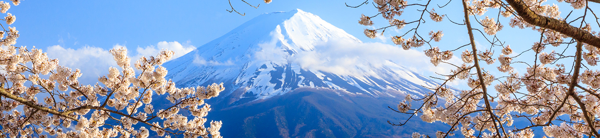

Japan
TÌM ĐIỂM ĐẾN YÊU THÍCH CỦA BẠN
Điểm đến
được yêu thích nhất
Hokkaido
Tohoku
Chubu
Kanto
Chugoku

Kinki
Shikoku
Japan Travel News
Check-in Abeno Harukas - tòa nhà cao nhất Nhật Bản
Check-in Abeno Harukas - tòa nhà cao nhất Nhật Bản
Tận hưởng mùa thu Tohoku cùng những chuyến tàu vui vẻ
5 điểm ngắm đom đóm mùa hè lãng mạn nhất Tokyo
6 danh thắng tuyệt đẹp ở Oita